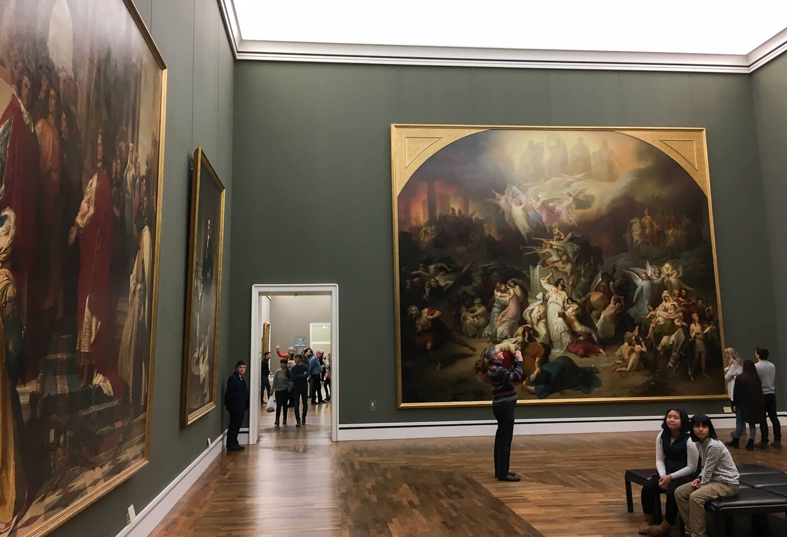
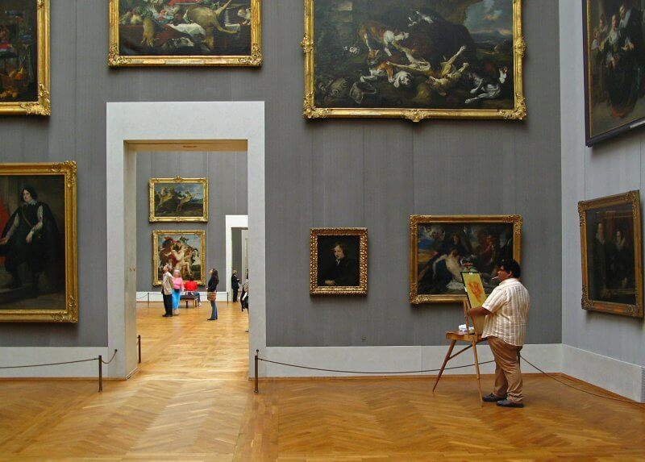
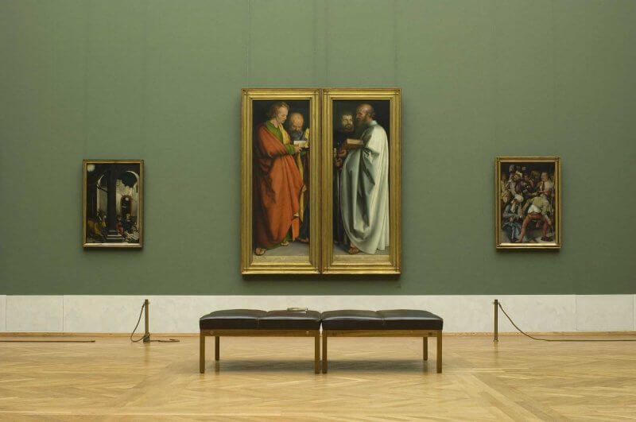
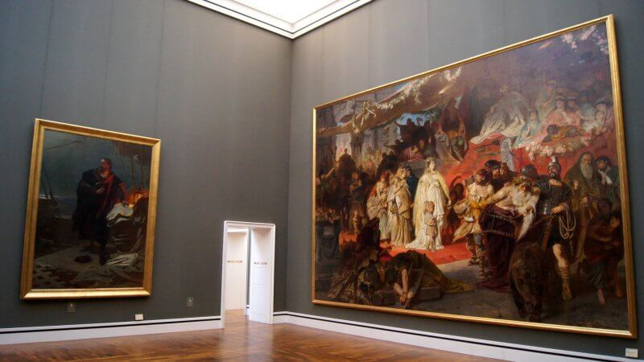

Согласно названию, что в переводе означает «собрание картин», в пинакотеке хранятся только произведения живописи.
После потрясений французских революций король Людвиг I Баварский (Ludwig I. von Bayern) решил сделать королевскую коллекцию искусства доступной для общественности. Специально для этой цели Людвиг I решает построить королевскую картинную галерею и поручает создать достойный проект придворному архитектору Лео фон Кленце (Leo von Klenze). В 1826 году начались строительные работы. К моменту их завершения здание королевской картинной галереи считалось крупнейшим в мире музейным строением и стало впоследствии образцом для музеев по всему миру. Именно Лео фон Кленце выполнил впоследствии здание Нового Эрмитажа в Санкт — Петербурге. Лео фон Кленце спланировал пинакотеку, свой шедевр архитектурного искусства, одновременно роскошно и функционально. Большие, дополнительно освещенные верхними окнами и стеклянными крышами залы сочетаются с кабинетными комнатами северного крыла здания. Основу экспозиции картинной галереи составили работы, выполненные специально под заказ еще Вильгельмом IV и, позже, Максимилианом I — Альбрехта Альтдорфа, Петера Поля Рубенса, Альбрехта Дюрера. Внук Максимилиана I, Максимилиан II, будучи губернатором Антверпена, приобрел большое количество картин голландских и фламандских мастеров. После объединения Баварии с Пфальцем коллекция картин пополнилась работами Рафаэля, Рембрандта, Буше и других художников. Во время строительства здания королевской галереи Людвиг I через своих агентов по искусству активно скупает картины великих мастеров, отдавая предпочтение старым немецким художникам и работам итальянского возрождения. Так в 1827–1828 годах были приобретены коллекции братьев Сублиц, Буиссер, графов Валленштейн, в Италии приобретена работа Рафаэля «Мадонна с занавеской». В 1836 году пинакотека была открыта, тогда, конечно, без приставки «старая», она была единственная. Это гораздо позже появятся. Новая пинакотека и Пинакотека современности. Само название «пинакотека» было выбрано Людвигом I и означает, в переводе с древнегреческого — «собрание картин».
Здесь можно разместить информацию об образовательных программах и ресурсы для учителей
Здесь можно разместить информацию об образовательных программах и ресурсы для учителей